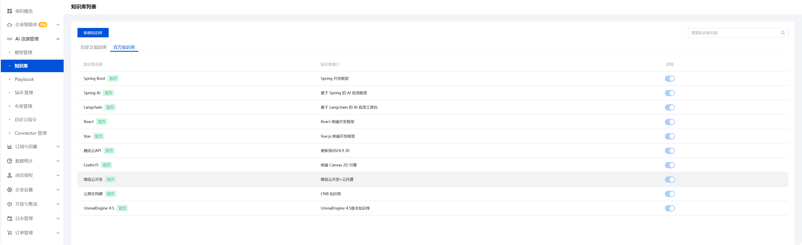
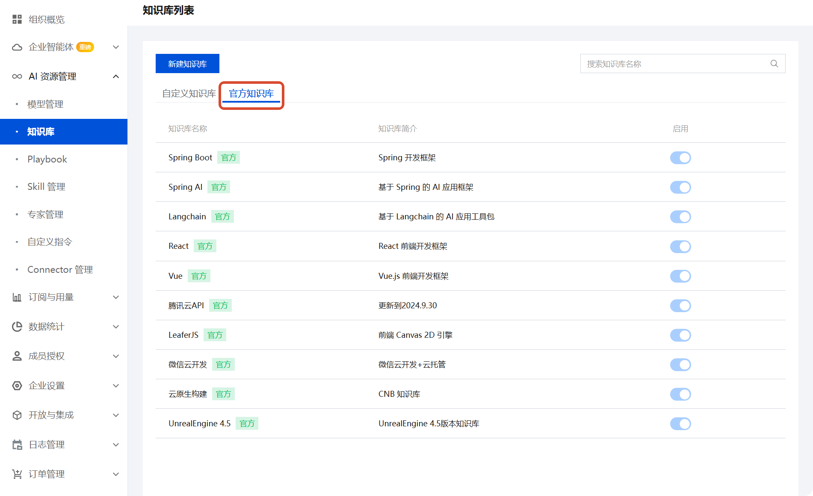
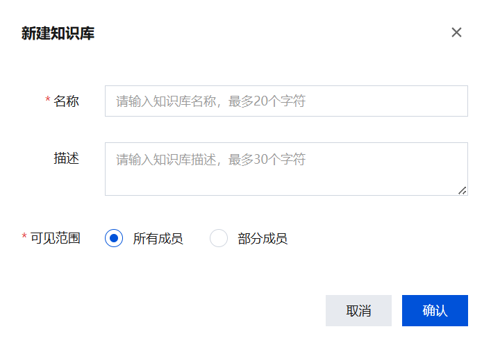
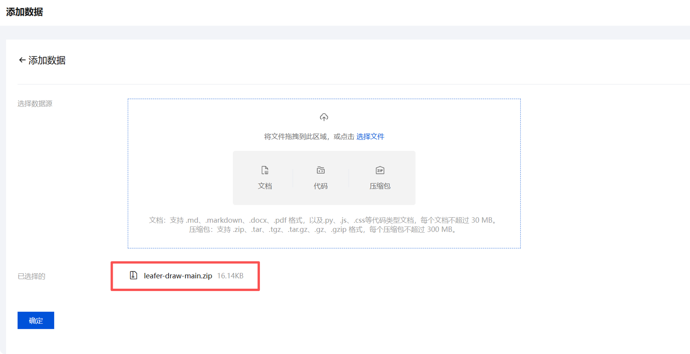
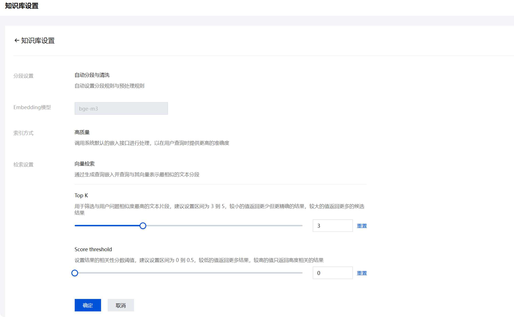
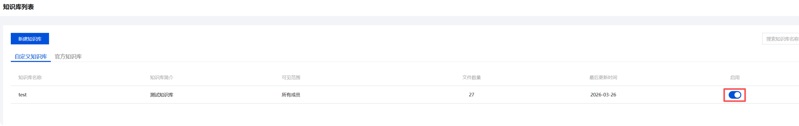
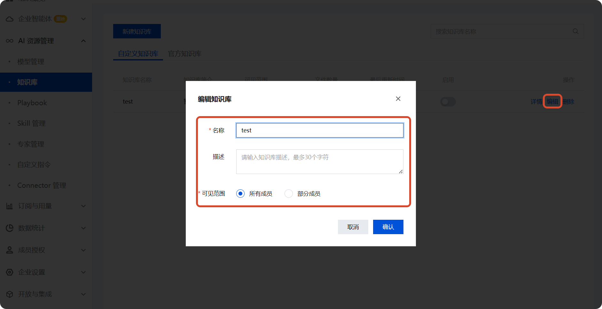
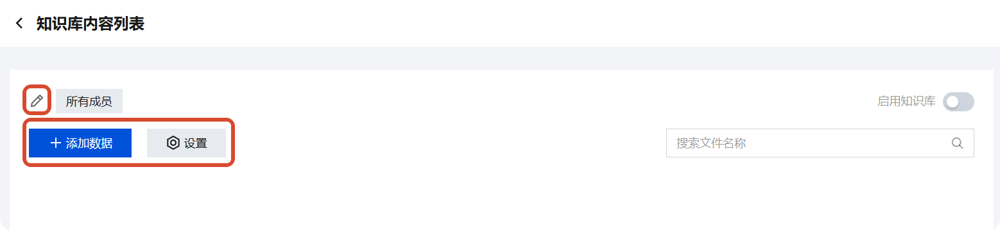
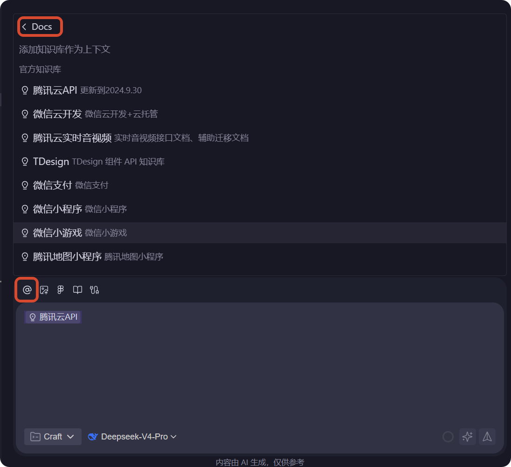

知识库
企业管理后台提供两种知识库类型：官方知识库和自定义知识库，帮助企业成员构建专属的 RAG（检索增强生成）上下文环境。
| 类型 | 说明 | 适用场景 |
|---|---|---|
| 官方知识库 | 平台预置的开源框架与技术规范知识库 | 快速接入常用技术栈 |
| 自定义知识库 | 企业/团队创建的私有知识库 | 沉淀企业内部文档与代码资产 |

官方知识库
平台预置以下官方知识库，支持按需启用或禁用：
框架和语言
| 知识库 | 描述 |
|---|---|
| Spring Boot | Spring 开发框架 |
| Spring AI | 基于 Spring 的 AI 应用框架 |
| React | React 前端开发框架 |
| Vue | Vue.js 前端开发框架 |
| LeaferJS | 前端 Canvas 2D 引擎 |
AI 工具包
| 知识库 | 描述 |
|---|---|
| LangChain | 基于 LangChain 的 AI 应用工具包 |
云服务
| 知识库 | 描述 |
|---|---|
| 腾讯云 API | 更新至 2024.9.30 |
| 微信云开发 | 微信云开发 + 云托管 |
| 云原生构建 (CNB) | CNB 知识库 |
游戏引擎
| 知识库 | 描述 |
|---|---|
| Unreal Engine 4.5 | Unreal Engine 4.5 版本知识库 |
查看官方知识库
进入 知识库管理 页面，切换至 官方知识库 标签页。

说明
启用的知识库将自动纳入 RAG 检索上下文。
自定义知识库
支持的文件格式
企业创建的自定义知识库支持以下文件格式：
- 单文件文档:
.md,.markdown,.docx,.pdf, 以及.py,.js,.css等代码文件（≤ 30 MB / 文件） - 压缩包:
.zip,.tar,.tgz,.tar.gz,.gz,.gzip（≤ 300 MB / 包） - 离线代码仓库: 支持 GitHub/GitLab 仓库导出包
企业管理员可以将企业内部文档、代码仓库等内容整合为统一知识源，使客户端应用在回答问题时引用企业上下文。
提示
文件内容命名需遵循 UTF-8 或 GBK 编码，暂不支持其他编码格式。
新建知识库
基础配置
配置基本信息：
| 字段 | 必填 | 限制 |
|---|---|---|
| 名称 | ✅ | ≤ 20 个英文字符 或 ≤ 10 个中文字符 |
| 描述 | ❌ | ≤ 30 个英文字符 或 ≤ 15 个中文字符 |
| 可见范围 | ✅ | 默认全部成员；支持指定部分成员 |

单击 确定 完成创建。
上传文件
支持两种方式上传文件：
- 拖拽上传：直接将文件拖入上传区域
- 点击选择：通过系统文件选择器选取文件
以 GitHub 仓库为例：
bash
# 1. 下载仓库为 ZIP 包
# 2. 将 ZIP 包拖入上传区域
# 3. 单击确认，后端自动解压并索引上传成功后返回首页，文件列表展示每条数据的 索引状态。

配置检索参数
在 知识库设置 中调整检索行为：
| 参数 | 说明 | 推荐值 |
|---|---|---|
| Top K | 返回与问题相似度最高的文本片段数量 | 3 ~ 5 |
| Score Threshold | 结果相关性分数阈值 | 0 ~ 0.5 |
- 较小的 Top K → 更少但更精确的结果
- 较低的 Score Threshold → 更多结果（召回率更高）
- 较高的 Score Threshold → 仅高度相关的结果（精度更高）

启用知识库
等待数据处理完成，数据处理状态变为 已完成 后即可启用：
| 状态 | 可用性 |
|---|---|
| 索引中 | ❌ 不可启用 |
| 索引失败 | ❌ 不可启用（检查文件编码或格式） |
| 已完成 | ✅ 默认已启用 |
返回知识库首页，开启知识库。

更新知识库
支持以下修改操作：
方式一：从列表编辑
在知识库列表中定位目标知识库，单击 编辑 按钮，修改名称、描述等基本信息。

方式二：从详情页编辑
进入知识库内部，单击顶部的编辑图标修改知识库名称，回车保存。
同时支持在此页面执行：
- 添加数据 — 上传新的文档或代码
- 设置 — 调整知识库检索参数

在客户端中使用知识库
工作原理
用户提问 → RAG 检索 → 上下文增强 → LLM 生成回答
↑ ↑
知识库 检索到的文本片段当你在对话中提问时，系统会：
- 从引用的知识库中检索相关内容。
- 将检索到的上下文注入 Prompt。
- 基于增强后的上下文生成回答。
使用步骤
- 使用企业账号登录客户端。
- 在对话框
@中选择 Docs 打开账号下的知识库列表。 - 点击引用知识库。

场景示例
| 场景 | 推荐做法 |
|---|---|
| 使用特定框架开发 | 启用对应官方知识库（如 React / Vue） |
| 查询企业内部 API | 在自定义知识库中上传 API 文档 |
| 调试遗留代码项目 | 将代码仓库作为离线代码库导入 |
| 多技术栈混合开发 | 同时启用多个相关知识库 |
常见问题
回答未引用知识库内容怎么办？
- 确认知识库已启用，且数据处理状态为「已完成」。
- 在客户端对话中使用
@引用对应知识库。 - 检查索引进度，等待索引完成后再提问。
索引失败怎么办？
- 确认上传文件的编码格式为 UTF-8 或 GBK。
- 检查文件大小是否超过限制（单文件 ≤ 30 MB，压缩包 ≤ 300 MB）。
- 重新上传符合要求的文件。
检索结果不精准怎么办？
- 进入 知识库设置 调整检索参数：
- 降低 Score Threshold 以提高召回率（推荐
0 ~ 0.5） - 适当增大 Top K 以获取更多参考片段（推荐
3 ~ 5）
- 降低 Score Threshold 以提高召回率（推荐
- 确认上传的文档内容与问题主题相关。
注意事项与重点提示
信息收集与使用
| 收集项 | 类型 | 用途 |
|---|---|---|
| 企业账号信息（登录凭据） | 必要 | 登录企业管理后台，进行知识库的创建、配置和管理操作 |
| 知识库名称与描述 | 必要 | 创建自定义知识库时用于标识和分类管理 |
| 上传的文档/代码文件内容 | 必要 | 构建 RAG 检索索引，为客户端 AI 对话提供企业专属上下文 |
| 可见范围成员选择 | 必要 | 控制知识库的访问权限，确保仅授权成员可检索和使用 |
| 检索参数（Top K、Score Threshold） | 非必要 | 仅在用户主动进入知识库设置调优检索精度和召回率时涉及 |
类型判定标准：
- 「必要」：使用产品功能时必须提供的信息（如企业账号、知识库名称、上传文件内容、可见范围配置）
- 「非必要」：仅在用户主动触发特定操作时才需要的数据（如调整检索参数）
权限边界
- 自定义知识库的可见范围由创建者按需配置，默认全部成员可见
- 知识库内容不主动对外共享，检索结果受可见范围限制
- 每位成员在对话中仅能检索其有权访问的知识库内容
安全提示
- 上传的文档和代码将经过后端解析和索引处理，请确认内容不包含超出可见范围的敏感信息
- 知识库默认可见范围为「全部成员」，建议按需调整为「指定成员」，避免信息过度暴露
- 不再使用的自定义知识库建议及时禁用或删除，减少不必要的数据暴露面
- 上传文件前请确认文件来源可靠，避免将外部不可信内容注入企业知识环境
- 授权后可随时通过企业后台的开关禁用或删除自定义知识库
积分消耗提醒
知识库自身的文件上传、解析和索引过程不单独消耗积分；在客户端对话中通过 @ 引用知识库后，客户端对知识库内容进行上下文检索、汇总和生成回答时会消耗积分。
第三方共享
- 官方知识库内容由平台维护并提供，遵循平台的数据管理策略
- 自定义知识库上传的文件内容由企业自行管理和控制，平台仅提供存储和索引服务
- 知识库内容不会主动分享给第三方，仅在您的企业成员授权范围内使用
免责声明
- 自定义知识库的内容准确性、合规性和时效性由上传者负责，客户端不对用户上传的文档内容进行审核
- 官方知识库基于对应开源框架和技术规范的公开文档构建，技术框架版本更新可能导致信息滞后，请以官方最新文档为准
- 客户端 AI 基于知识库检索结果生成的回答仅供参考，关键决策请结合实际情况验证
使用建议
- 上传文件前务必确认编码格式为 UTF-8 或 GBK，其他编码格式将导致索引失败
- 严格遵守文件大小限制，单文件 ≤ 30 MB，压缩包 ≤ 300 MB，超出限制的文件将无法完成索引
- 建议根据实际使用场景调整检索参数：Top K 推荐 3~5（平衡精度与召回），Score Threshold 推荐 0~0.5；检索结果不精准时可适当降低阈值或增大 Top K
- 在客户端对话中务必使用
@引用目标知识库，否则 客户端 AI 回答不会纳入知识库内容作为上下文